11 MLM, Longitudinal: Hedeker & Gibbons - Depression
install.packages("devtools")
devtools::install_github("sarbearschwartz/apaSupp") # updated 9/17/2025Load/activate these packages
library(HLMdiag) # package with the dataset
library(tidyverse)
library(flextable)
library(apaSupp) # Not on CRAN, on GitHub (see above)
library(psych)
library(VIM)
library(naniar)
library(lme4)
library(lmerTest)
library(optimx)
library(performance)
library(interactions)
library(emmeans)
library(ggResidpanel)
library(HLMdiag)
library(sjPlot)
library(sjstats) # ICC calculations
library(effects) # Estimated Marginal Means
library(corrplot) # Visualize correlation matrix11.1 Background
Starting in chapter 4, (Hedeker and Gibbons 2006) details analysis of a psychiatric study described by (Reisby et al. 1977). This study focuses on the relationship between Imipramine (IMI) and Desipramine (DMI) plasma levels and clinical response in 66 depressed inpatients (37 endogenous and 29 non-endogenous).
Note: The IMI and DMI measures were only taken in the later weeks, but are not used here.
hamdHamilton Depression Scores (HD)
Independent or predictor variables:
endogDepression Diagnosisendogenous
non-endogenous/reactive
IMI (imipramine) drug-plasma levels (µg/l)
antidepressant given 225 mg/day, weeks 3-6
DMI (desipramine) drug-plasma levels (µg/l)
metabolite of imipramine
data_raw <- read.table("data/riesby.dat.txt") %>%
dplyr::rename(id = "V1",
hamd = "V2",
endog = "V5",
week = "V4") %>%
dplyr::select(-V3, -V6) id hamd week endog
1 101 26 0 0
2 101 22 1 0
3 101 18 2 0
4 101 7 3 0
5 101 4 4 0
6 101 3 5 0
7 103 33 0 0
8 103 24 1 0
9 103 15 2 0
10 103 24 3 0
11 103 15 4 0
... ... <NA> ... ...
389 360 28 4 1
390 360 33 5 1
391 361 30 0 1
392 361 22 1 1
393 361 11 2 1
394 361 8 3 1
395 361 7 4 1
396 361 19 5 111.1.1 Long Format
data_long <- data_raw %>%
dplyr::filter(!is.na(hamd)) %>% # remove NA or missing scores
dplyr::mutate(id = factor(id)) %>% # declare grouping var a factor
dplyr::mutate(endog = factor(endog, # attach labels to a grouping variable
levels = c(0, 1), # order of the levels should match levels
labels = c("Reactive", # order matters!
"Endogenous"))) %>%
dplyr::mutate(hamd = as.numeric(hamd)) %>%
dplyr::select(id, week, endog, hamd) %>% # select the order of variables to include
dplyr::arrange(id, week) # sort observations id week endog hamd
1 101 0 Reactive 26
2 101 1 Reactive 22
3 101 2 Reactive 18
4 101 3 Reactive 7
5 101 4 Reactive 4
6 101 5 Reactive 3
7 103 0 Reactive 33
8 103 1 Reactive 24
9 103 2 Reactive 15
10 103 3 Reactive 24
11 103 4 Reactive 15
... <NA> ... <NA> ...
389 609 4 Endogenous 15
390 609 5 Endogenous 2
391 610 0 Endogenous 34
392 610 1 Endogenous <NA>
393 610 2 Endogenous 33
394 610 3 Endogenous 23
395 610 4 Endogenous <NA>
396 610 5 Endogenous 1111.1.2 Wide Format
data_wide <- data_long %>% # save the dataset as a new name
tidyr::pivot_wider(names_from = week,
names_prefix = "hamd_",
values_from = hamd)Notice the missing values, displayed as NA.
id endog hamd_0 hamd_1 hamd_2 hamd_3 hamd_4 hamd_5
1 101 Reactive 26 22 18 7 4 3
2 103 Reactive 33 24 15 24 15 13
3 104 Endogenous 29 22 18 13 19 0
4 105 Reactive 22 12 16 16 13 9
5 <NA> <NA> ... ... ... ... ... ...
6 607 Endogenous 30 39 30 27 20 4
7 608 Reactive 24 19 14 12 3 4
8 609 Endogenous <NA> 25 22 14 15 2
9 610 Endogenous 34 <NA> 33 23 <NA> 1111.2 Exploratory Data Analysis
11.2.1 Diagnosis Group
Statistic | ||
|---|---|---|
Depression Type | ||
Reactive | 29 (43.9%) | |
Endogenous | 37 (56.1%) | |
11.2.2 Missing Data & Attrition
Plot the amount of missing values and the amount of each patter of missing values.

11.2.3 Depression Over Time, by Group
11.2.3.1 Table of Means
data_wide %>%
dplyr::select(endog,
"Baseline" = hamd_0,
"Week 1" = hamd_1,
"Week 2" = hamd_2,
"Week 3" = hamd_3,
"Week 4" = hamd_4,
"Week 5" = hamd_5) %>%
apaSupp::tab1(split = "endog",
caption = "Hamilton Depression Scores Across Time, by Depression Type")
| Total | Reactive | Endogenous | p-value |
|---|---|---|---|---|
Baseline | 23.44 (4.53) | 22.79 (4.12) | 24.00 (4.85) | .295 |
Unknown | 5 | 1 | 4 | |
Week 1 | 21.84 (4.70) | 20.48 (3.83) | 23.00 (5.10) | .029* |
Unknown | 3 | 0 | 3 | |
Week 2 | 18.31 (5.49) | 17.00 (4.35) | 19.30 (6.08) | .081 |
Unknown | 1 | 1 | 0 | |
Week 3 | 16.42 (6.42) | 15.34 (6.17) | 17.28 (6.56) | .227 |
Unknown | 1 | 0 | 1 | |
Week 4 | 13.62 (6.97) | 12.62 (6.72) | 14.47 (7.17) | .295 |
Unknown | 3 | 0 | 3 | |
Week 5 | 11.95 (7.22) | 11.22 (6.34) | 12.58 (7.96) | .473 |
Unknown | 8 | 2 | 6 | |
Note. Continuous variables are summarized with means (SD) and significant group differences assessed via independent t-tests. Categorical variables are summarized with counts (%) and significant group differences assessed via Chi-squared tests for independence. | ||||
* p < .05. ** p < .01. *** p < .001. | ||||
11.2.3.2 Using the LONG formatted dataset
Each person’s data is stored on multiple lines, one for each time point.
FOR ALL DATA AVAILABLE!
data_long %>%
dplyr::group_by(endog, week) %>% # specify the groups
dplyr::filter(!is.na(hamd)) %>%
dplyr::summarise(hamd_n = n(), # count of valid scores
hamd_mean = mean(hamd), # mean score
hamd_sd = sd(hamd), # standard deviation of scores
hamd_sem = hamd_sd / sqrt(hamd_n)) %>% # stadard error for the mean of scores
flextable::as_grouped_data(groups = "endog") %>%
flextable::flextable() %>%
flextable::separate_header() %>%
apaSupp::theme_apa() %>%
flextable::hline(part = "header", i = 1)endog | week | hamd | |||
|---|---|---|---|---|---|
n | mean | sd | sem | ||
Reactive | |||||
0 | 28 | 22.79 | 4.12 | 0.78 | |
1 | 29 | 20.48 | 3.83 | 0.71 | |
2 | 28 | 17.00 | 4.35 | 0.82 | |
3 | 29 | 15.34 | 6.17 | 1.15 | |
4 | 29 | 12.62 | 6.72 | 1.25 | |
5 | 27 | 11.22 | 6.34 | 1.22 | |
Endogenous | |||||
0 | 33 | 24.00 | 4.85 | 0.84 | |
1 | 34 | 23.00 | 5.10 | 0.87 | |
2 | 37 | 19.30 | 6.08 | 1.00 | |
3 | 36 | 17.28 | 6.56 | 1.09 | |
4 | 34 | 14.47 | 7.17 | 1.23 | |
5 | 31 | 12.58 | 7.96 | 1.43 | |
FOR COMPLETE CASES ONLY!!!
data_long %>%
dplyr::group_by(id) %>% # group-by participant
dplyr::filter(!is.na(hamd)) %>%
dplyr::mutate(person_vsae_n = n()) %>% # count the number of valid VSAE scores
dplyr::filter(person_vsae_n == 6) %>% # restrict to only thoes children with 5 valid scores
dplyr::group_by(endog, week) %>% # specify the groups
dplyr::summarise(hamd_n = n(), # count of valid scores
hamd_mean = mean(hamd), # mean score
hamd_sd = sd(hamd), # standard deviation of scores
hamd_sem = hamd_sd / sqrt(hamd_n)) %>% # stadard error for the mean of scores
flextable::as_grouped_data(groups = "endog") %>%
flextable::flextable() %>%
flextable::separate_header() %>%
apaSupp::theme_apa() %>%
flextable::hline(part = "header", i = 1)endog | week | hamd | |||
|---|---|---|---|---|---|
n | mean | sd | sem | ||
Reactive | |||||
0 | 25 | 22.36 | 3.90 | 0.78 | |
1 | 25 | 20.08 | 3.68 | 0.74 | |
2 | 25 | 17.32 | 4.34 | 0.87 | |
3 | 25 | 15.88 | 5.84 | 1.17 | |
4 | 25 | 12.84 | 6.68 | 1.34 | |
5 | 25 | 11.40 | 6.54 | 1.31 | |
Endogenous | |||||
0 | 21 | 24.10 | 4.87 | 1.06 | |
1 | 21 | 23.90 | 5.47 | 1.19 | |
2 | 21 | 18.95 | 6.01 | 1.31 | |
3 | 21 | 17.48 | 6.86 | 1.50 | |
4 | 21 | 14.19 | 6.98 | 1.52 | |
5 | 21 | 13.05 | 8.73 | 1.90 | |
11.2.3.3 Person-Profile Plot or Spaghetti Plot
Use the data in LONG format.
A scatterplot of all observations of depression scores over time, joining the dots of each individual’s data.
NOTE: Not all lines have a point for every week!
data_long %>%
dplyr::filter(!is.na(hamd)) %>%
ggplot(aes(x = week,
y = hamd)) +
geom_point() +
geom_line(aes(group = id)) + # join points that belong to the same "id"
theme_bw() +
labs(x = "Weeks Since Baseline",
y = "Estimated Hamilton Depression Score (HD)") 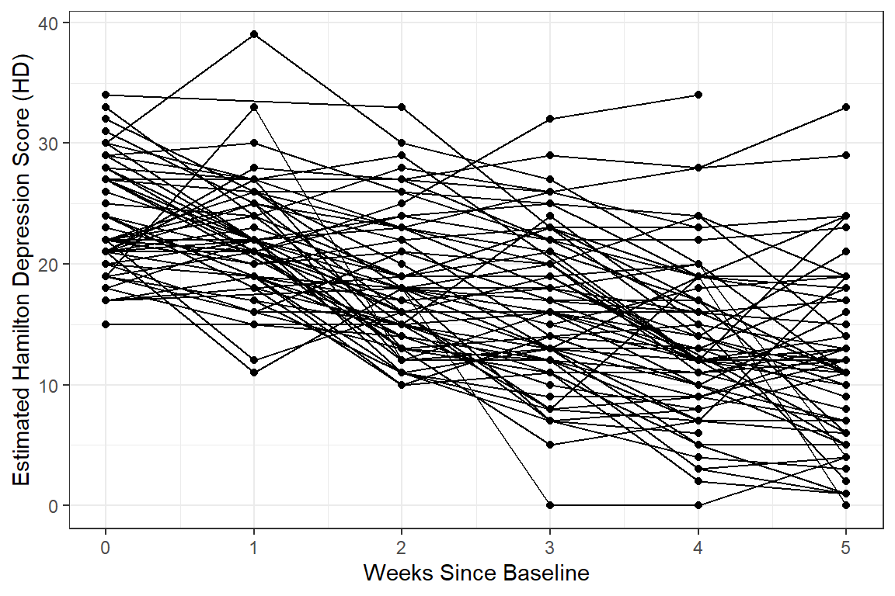
data_long %>%
dplyr::filter(!is.na(hamd)) %>%
ggplot(aes(x = week,
y = hamd,
color = endog)) + # color points and lines by the "endog" variable
geom_line(aes(group = id)) +
theme_bw() +
labs(x = "Weeks Since Baseline",
y = "Estimated Hamilton Depression Score (HD)") 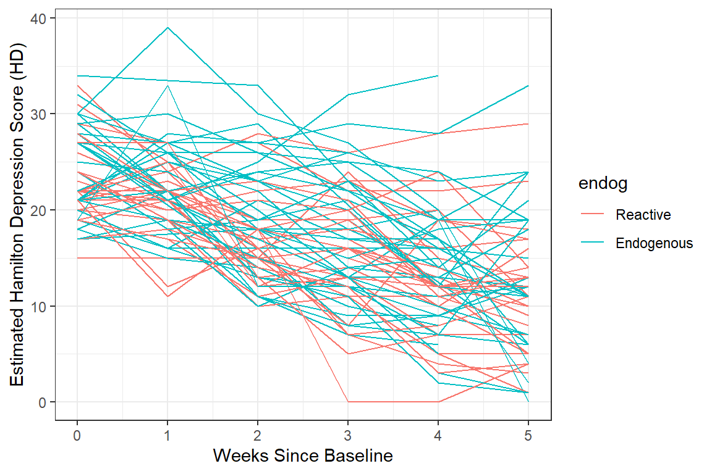
data_long %>%
dplyr::filter(!is.na(hamd)) %>%
ggplot(aes(x = week,
y = hamd)) +
geom_line(aes(group = id)) +
facet_grid( ~ endog) + # side-by-side pandels by the "endog" variable
theme_bw() +
labs(x = "Weeks Since Baseline",
y = "Estimated Hamilton Depression Score (HD)") 
data_long %>%
dplyr::filter(!is.na(hamd)) %>%
ggplot(aes(x = week %>% factor(),
y = hamd)) +
geom_boxplot() + # compare center and spread
facet_grid( ~ endog) +
theme_bw() +
labs(x = "Weeks Since Baseline",
y = "Estimated Hamilton Depression Score (HD)") 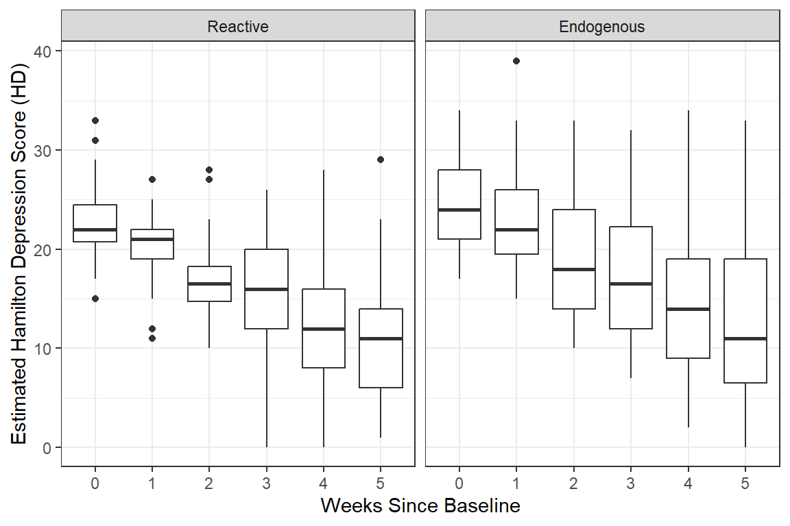
data_long %>%
dplyr::filter(!is.na(hamd)) %>%
ggplot(aes(x = week %>% factor(),
y = hamd)) +
geom_violin(fill = "gray75") + # similar to boxplots to show distribution
stat_summary() +
stat_summary(aes(group = "endog"),
fun = mean,
geom = "line") +
facet_grid( ~ endog) +
theme_bw() +
labs(x = "Weeks Since Baseline",
y = "Estimated Hamilton Depression Score (HD)") 
data_long %>%
dplyr::filter(!is.na(hamd)) %>%
ggplot(aes(x = week,
y = hamd,
color = endog)) +
stat_summary() +
stat_summary(aes(group = endog,
linetype = endog),
fun = mean,
geom = "line") +
scale_linetype_manual(values = c("solid", "longdash")) +
theme(legend.position = "bottom",
legend.key.width = unit(2, "cm")) +
theme_bw() +
labs(x = "Weeks Since Baseline",
y = "Estimated Hamilton Depression Score (HD)") 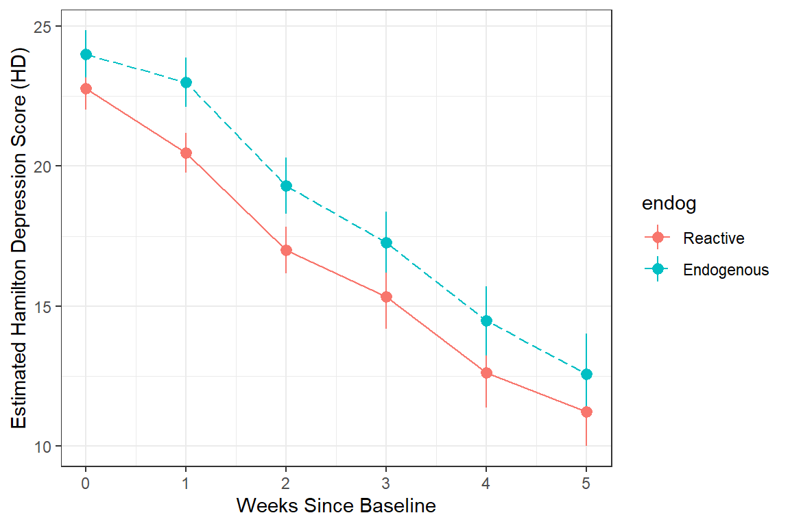
data_long %>%
dplyr::filter(!is.na(hamd)) %>%
ggplot(aes(x = week,
y = hamd)) +
geom_line(aes(group = id)) +
facet_grid( ~ endog) +
geom_smooth() + # DEFAULTS: method = "loess", se = TRUE, color = "blue"
geom_smooth(method = "lm",
se = FALSE,
color = "hot pink")+
theme_bw() +
labs(x = "Weeks Since Baseline",
y = "Estimated Hamilton Depression Score (HD)") 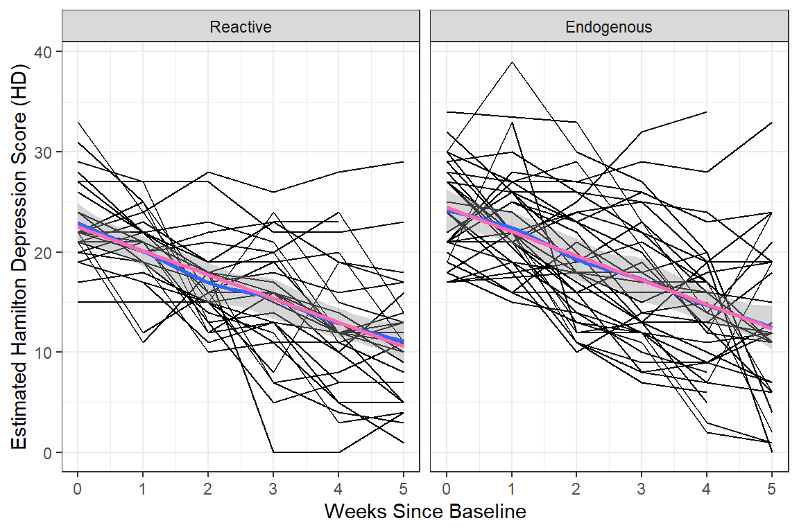
data_long %>%
dplyr::filter(!is.na(hamd)) %>%
ggplot(aes(x = week,
y = hamd)) +
facet_grid( ~ endog) +
geom_smooth(aes(color = "Flexible"),
method = "loess",
se = FALSE,) +
geom_smooth(aes(color = "Linear"),
method = "lm",
se = FALSE) +
scale_color_manual(name = "Smoother Type: ",
values = c("Flexible" = "blue",
"Linear" = "red")) +
theme_bw() +
theme(legend.position = "bottom") +
labs(x = "Weeks Since Baseline",
y = "Estimated Hamilton Depression Score (HD)") 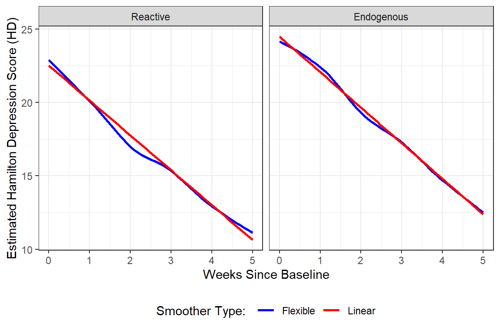
data_long %>%
ggplot(aes(x = week,
y = hamd,
group = endog,
linetype = endog)) +
geom_smooth(method = "loess",
color = "black",
alpha = .25) +
theme_bw() +
scale_linetype_manual(values = c("solid", "longdash")) +
theme(legend.position = c(1, 1),
legend.justification = c(1.1, 1.1),
legend.background = element_rect(color = "black"),
legend.key.width = unit(1.5, "cm")) +
labs(x = "Weeks Since Baseline",
y = "Estimated Hamilton Depression Scale",
linetype = "Type of Depression")
data_long %>%
dplyr::filter(!is.na(hamd)) %>%
ggplot(aes(x = week,
y = hamd,
group = endog,
linetype = endog)) +
geom_smooth(method = "loess",
color = "black",
alpha = .25) +
theme_bw() +
scale_linetype_manual(values = c("solid", "longdash")) +
theme(legend.position = c(1, 1),
legend.justification = c(1.1, 1.1),
legend.background = element_rect(color = "black"),
legend.key.width = unit(2, "cm")) +
labs(x = "Weeks Since Baseline",
y = "EsStimated Hamilton Depression Scale",
linetype = "Type of Depression")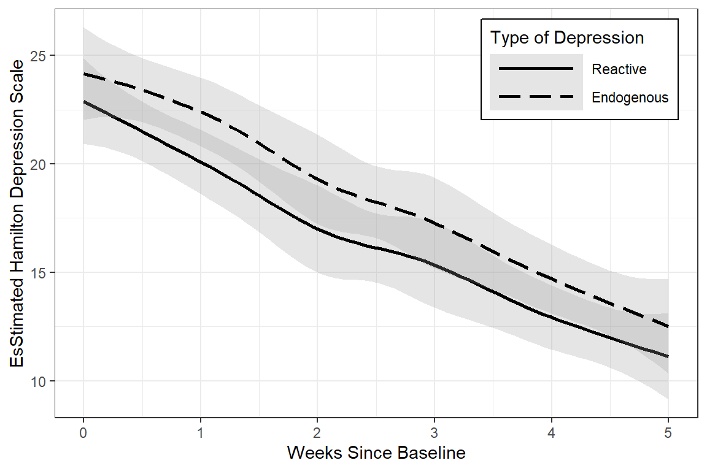
data_long %>%
dplyr::filter(!is.na(hamd)) %>%
ggplot(aes(x = week,
y = hamd,
group = endog,
linetype = endog)) +
geom_smooth(method = "lm",
color = "black",
alpha = .25) +
theme_bw() +
scale_linetype_manual(values = c("solid", "longdash")) +
theme(legend.position = c(1, 1),
legend.justification = c(1.1, 1.1),
legend.background = element_rect(color = "black"),
legend.key.width = unit(1.5, "cm")) +
labs(x = "Weeks Since Baseline",
y = "EStimated Hamilton Depression Scale",
linetype = "Type of Depression")
11.3 Patterns in the Outcome Over Time
11.3.1 Variance-Covariance
11.3.1.1 Full Matrix
- Variances are down the diagonal
- Increasing variance over time violates the ANOVA assumption of homogeity of variance
data_wide %>%
dplyr::select(starts_with("hamd_")) %>% # just the outcome(s)
cov(use = "complete.obs") %>% # covariance matrix, LIST-wise deletion
round(3) hamd_0 hamd_1 hamd_2 hamd_3 hamd_4 hamd_5
hamd_0 19.421 10.716 9.523 12.350 9.062 7.376
hamd_1 10.716 24.236 12.545 15.930 11.592 8.471
hamd_2 9.523 12.545 26.773 23.848 23.858 20.657
hamd_3 12.350 15.930 23.848 39.755 33.316 29.728
hamd_4 9.062 11.592 23.858 33.316 45.943 37.107
hamd_5 7.376 8.471 20.657 29.728 37.107 57.332data_wide %>%
dplyr::select(starts_with("hamd_")) %>% # just the outcome(s)
cov(use = "pairwise.complete.obs") %>% # covariance matrix, PAIR-wise deletion
round(3) hamd_0 hamd_1 hamd_2 hamd_3 hamd_4 hamd_5
hamd_0 20.551 10.115 10.139 10.086 7.191 6.278
hamd_1 10.115 22.071 12.277 12.550 10.264 7.720
hamd_2 10.139 12.277 30.091 25.126 24.626 18.384
hamd_3 10.086 12.550 25.126 41.153 37.339 23.992
hamd_4 7.191 10.264 24.626 37.339 48.594 30.513
hamd_5 6.278 7.720 18.384 23.992 30.513 52.12011.3.1.2 Just Variances
Notice the variance in scores increases over time, which is seen in the side-by-side boxplots.
data_wide %>%
dplyr::select(starts_with("hamd_")) %>% # just the outcome(s)
cov(use = "pairwise.complete.obs") %>% # covariance matrix, PAIR-wise deletion
diag() # extracts just the variances hamd_0 hamd_1 hamd_2 hamd_3 hamd_4 hamd_5
20.55082 22.07117 30.09135 41.15288 48.59447 52.12008 11.3.2 Correlation
11.3.2.1 Full Matrix
Pairwise relationships are easier to eye-ball magnitude when presented as correlations, rather than covariances, due to the relative scale.
data_wide %>%
dplyr::select(starts_with("hamd_")) %>% # just the outcome(s)
cor(use = "complete.obs") %>% # correlation matrix - LIST-wise deletion
round(2) hamd_0 hamd_1 hamd_2 hamd_3 hamd_4 hamd_5
hamd_0 1.00 0.49 0.42 0.44 0.30 0.22
hamd_1 0.49 1.00 0.49 0.51 0.35 0.23
hamd_2 0.42 0.49 1.00 0.73 0.68 0.53
hamd_3 0.44 0.51 0.73 1.00 0.78 0.62
hamd_4 0.30 0.35 0.68 0.78 1.00 0.72
hamd_5 0.22 0.23 0.53 0.62 0.72 1.00data_wide %>%
dplyr::select(starts_with("hamd_")) %>% # just the outcome(s)
cor(use = "pairwise.complete.obs") %>% # correlation matrix - PAIR-wise deletion
round(2) hamd_0 hamd_1 hamd_2 hamd_3 hamd_4 hamd_5
hamd_0 1.00 0.49 0.41 0.33 0.23 0.18
hamd_1 0.49 1.00 0.49 0.41 0.31 0.22
hamd_2 0.41 0.49 1.00 0.74 0.67 0.46
hamd_3 0.33 0.41 0.74 1.00 0.82 0.57
hamd_4 0.23 0.31 0.67 0.82 1.00 0.65
hamd_5 0.18 0.22 0.46 0.57 0.65 1.0011.3.2.2 Visualization
Looking for patterns is always easier with a plot. All RM or mixed ANOVA assume sphericity or compound symmetry, meaning that all the correlations in the matrix would be the same. This is not the case for these data. Instead we see a classic pattern of corralary decay. Measures taken close in time, say 1 week apart, exhibit the highest degree of correlation. The farther apart in time that two measures are taken, the less correlated they are. Note that the adjacent measures become more highly correlated, too. This can be due to attrition; later time points having a smaller sample size.
data_wide %>%
dplyr::select(starts_with("hamd_")) %>% # just the outcome(s)
cor(use = "pairwise.complete.obs") %>% # correlation matrix
corrplot::corrplot.mixed(upper = "ellipse")
11.3.3 For Each Group
It can be a good ideal to investigate if the groups exhibit a similar pattern in correlation.
Reactive Depression
data_wide %>%
dplyr::filter(endog == "Reactive") %>% # filter observations for the REACTIVE group
dplyr::select(starts_with("hamd_")) %>%
cor(use = "pairwise.complete.obs") %>%
corrplot::corrplot.mixed(upper = "ellipse")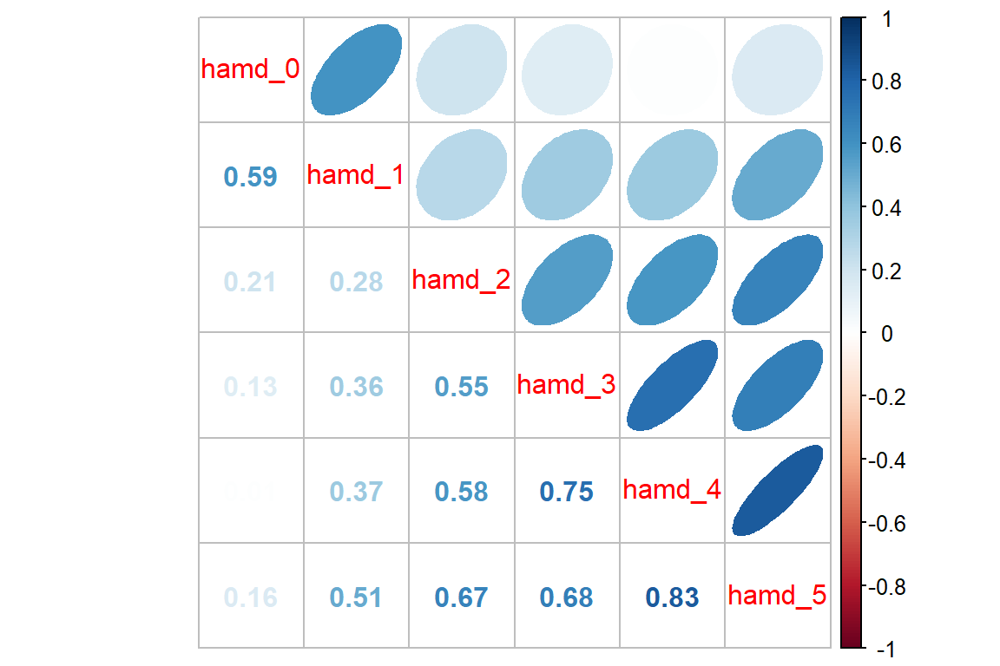
Endogenous Depression
data_wide %>%
dplyr::filter(endog == "Endogenous") %>% # filter observations for the Endogenous group
dplyr::select(starts_with("hamd_")) %>%
cor(use = "pairwise.complete.obs") %>%
corrplot::corrplot.mixed(upper = "ellipse")
11.4 MLM - Null or Emptly Models
11.4.1 Fit the model
Random Intercepts, with Fixed Intercept and Time Slope (i.e. Trend)….@hedeker2006 section 4.3.5, starting on page 55
Since this situation deals with longitudinal data, it is more appropriate to start off including the time variable in the null model as a fixed effect only.
11.4.2 Table of Parameter Estimates
apaSupp::tab_lmer(fit_lmer_week_RI_reml,
caption = "MLM: Random Intercepts Null Model fit w/REML",
general_note = "Reproduction of Hedeker's table 4.3 on page 55, except using REML here instead of ML")Est | (SE) | p | |
|---|---|---|---|
(Intercept) | 23.55 | (0.64) | < .001*** |
week | -2.38 | (0.14) | < .001*** |
id.var__(Intercept) | 16.45 | ||
Residual.var__Observation | 19.10 | ||
Note. Est = estimated regresssion coefficient for fixed effects and varaince/covariance estimates for random effects. p = significance from Wald t-test for parameter estimate using Satterthwaite's method for degrees of freedom. Reproduction of Hedeker's table 4.3 on page 55, except using REML here instead of ML | |||
* p < .05. ** p < .01. *** p < .001. | |||
On average, patients start off with HDRS scores of 23.55 and then change by -2.38 points each week. This weekly improvement of about 2 points a week is statistically significant via the Wald test.
11.4.3 Estimated Marginal Means Plot
Multilevel model on page 55 (Hedeker and Gibbons 2006)
\[ \hat{y} = 23.552 + -2.376 week \]
The fastest way to plot a model is to use the sjPlot::plot_model() function.
Note: you can’t use
interactions::interact_plot()since there is only one predictor (i.e. independent variable) in this model.
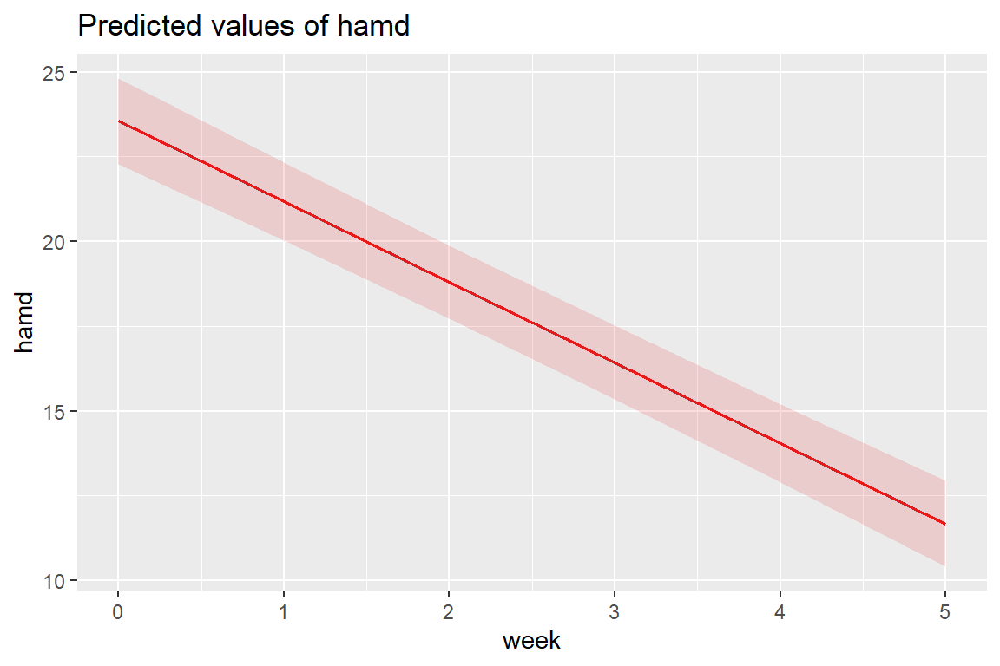
11.4.4 Estimated Marginal Means and Emperical Bayes Plots
With a bit more code we can plot not only the marginal model (fixed effects only), but add the Best Linear Unbiased Predictions (BLUPs) or person-specific specific models (both fixed and random effects).
data_long %>%
dplyr::mutate(pred_fixed = predict(fit_lmer_week_RI_reml,
re.form = NA, # fixed effects only
newdata = .)) %>%
dplyr::mutate(pred_wrand = predict(fit_lmer_week_RI_reml, # fixed and random effects both
newdata = .)) %>%
ggplot(aes(x = week,
y = hamd,
group = id)) +
geom_line(aes(y = pred_wrand,
color = "BLUP",
size = "BLUP",
linetype = "BLUP")) +
geom_line(aes(y = pred_fixed,
color = "Marginal",
size = "Marginal",
linetype = "Marginal")) +
theme_bw() +
scale_color_manual(name = "Type of Prediction",
values = c("BLUP" = "gray50",
"Marginal" = "blue")) +
scale_size_manual(name = "Type of Prediction",
values = c("BLUP" = .5,
"Marginal" = 1.25)) +
scale_linetype_manual(name = "Type of Prediction",
values = c("BLUP" = "longdash",
"Marginal" = "solid")) +
theme(legend.position = c(0, 0),
legend.justification = c(-0.1, -0.1),
legend.background = element_rect(color = "black"),
legend.key.width = unit(1.5, "cm")) +
labs(x = "Weeks Since Baseline",
y = "Estimated Hamilton Depression Score (HD)")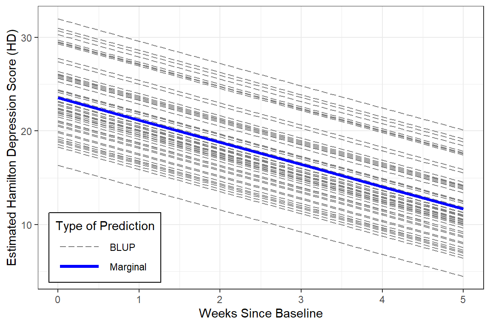
Notice that in this model, all the BLUPs are parallel. That is because we are only letting the intercept vary from person-to-person while keeping the effect of time (slope) constant.
Reproduce Table 4.4 on page 55 (Hedeker and Gibbons 2006)
One way to judge a model is to compare the estimated means to the observed means to see how accuratedly they are represented by the model. This excellent fit of the estimated marginal means to the observed data supports the hypothesis that the change in depression across time is LINEAR.
obs <- data_long %>%
dplyr::group_by(week) %>%
dplyr::summarise(observed = mean(hamd, na.rm = TRUE))
effects::Effect(focal.predictors = "week",
mod = fit_lmer_week_RI_reml,
xlevels = list(week = 0:5)) %>%
data.frame() %>%
dplyr::rename(estimated = fit) %>%
dplyr::left_join(obs, by = "week") %>%
dplyr::select(week, observed, estimated) %>%
dplyr::mutate(diff = observed - estimated) %>%
flextable::flextable() %>%
apaSupp::theme_apa(caption = "Observed and Estimated Means")week | observed | estimated | diff |
|---|---|---|---|
0.00 | 23.44 | 23.55 | -0.11 |
1.00 | 21.84 | 21.18 | 0.67 |
2.00 | 18.31 | 18.80 | -0.49 |
3.00 | 16.42 | 16.42 | -0.01 |
4.00 | 13.62 | 14.05 | -0.43 |
5.00 | 11.95 | 11.67 | 0.27 |
11.4.5 Intra-individual Correlation (ICC)
# Intraclass Correlation Coefficient
Adjusted ICC: 0.463
Unadjusted ICC: 0.319Interpretation Just less than a third (\(\rho_c = .32\)) in baseline depression is explained by person-to-person differences. Thus, subjects display considerable heterogeneity in depression levels.
This value of .46is an oversimplification of the correlation matrix above and may be thought of as the expected correlation between two randomly drawn weeks for any given person.
# R2 for Mixed Models
Conditional R2: 0.629
Marginal R2: 0.310Interpretation Linear growth accounts for 31% of the variance in Hamilton Depression Scores across the six weeks. Linear growth AND person-to-person differences account for a total 63% of this variance.
This value of 46% is an oversimplification of the correlation matrix above and may be thought of as the expected correlation between two randomly drawn weeks for any given person.
# R2 for Mixed Models
Conditional R2: 0.629
Marginal R2: 0.310Note: The marginal \(R^2\) considers only the variance of the fixed effects, while the conditional \(R^2\) takes both the fixed and random effects into account. The random effect variances are actually the mean random effect variances, thus the \(R^2\) value is also appropriate for mixed models with random slopes or nested random effects (see Johnson 2014).
Interpretation Linear growth accounts for 31% of the variance in Hamilton Depression Scores across the six weeks. Linear growth AND person-to-person differences account for a total 63% of this variance.
Note: The marginal R^2 considers only the variance of the fixed effects, while the conditional R^2 takes both the fixed and random effects into account. The random effect variances are actually the mean random effect variances, thus the R^2 value is also appropriate for mixed models with random slopes or nested random effects (see Johnson 2014).
11.4.6 Compare to the Single-Level Null: No Random Effects
Simple Linear Regression, (Hedeker and Gibbons 2006)
To compare, fit the single level regression model
11.4.6.1 Table of Parameter Estimates
texreg::screenreg(list(fit_lm_week_ml, fit_lmer_week_RI_reml),
custom.model.names = c("Single-Level", "Multilevel"),
single.row = TRUE,
caption = "MLM: Longitudinal Null Models",
caption.above = TRUE,
custom.note = "The singel-level model treats are observations as being independent and unrelated to each other, even if they were made on the same person.")===========================================================
Single-Level Multilevel
———————————————————–
(Intercept) 23.60 (0.55) *** 23.55 (0.64)
week -2.41 (0.18) -2.38 (0.14) ***
———————————————————–
R^2 0.32
Adj. R^2 0.32
Num. obs. 375 375
AIC 2294.73
BIC 2310.43
Log Likelihood -1143.36
Num. groups: id 66
Var: id (Intercept) 16.45
Var: Residual 19.10
===========================================================
The singel-level model treats are observations as being independent and unrelated to each other, even if they were made on the same person.
For the multilevel model, the Wald tests indicated the fixed intercept is significant (no surprised that the depressions scores are not zero at baseline). More of note is the significance of the fixed effect of time. This signifies that depression scores are declining over time. On average, patients are improving (Hamilton Depression Scores get smaller) across time, by an average of 2.4’ish points a week.
For the multilevel model, the Wald tests indicated the fixed intercept is significant (no surprised that the depressions scores are not zero at baseline). More of note is the significance of the fixed effect of time. This signifies that depression scores are declining over time. On average, patients are improving (Hamilton Depression Scores get smaller) across time, by an average of 2.4’ish points a week.
11.4.6.2 Residual Variance
Note, the fixed estimates are very similar for the two models, but the standard errors are different. Additionally, whereas the single-level regression lumps all remaining variance together (\(\sigma^2\)), the multilevel model seperates it into within-subjects (\(\sigma^2_{u0}\) or \(\tau_{00}\)) and between-subjects variance (\(\sigma^2_{e}\) or \(\sigma^2\)).
[1] 35.3997lme4::VarCorr(fit_lmer_week_RI_reml) %>% # in longitudinal data, a group of observations = a participant or person
print(comp = c("Variance", "Std.Dev")) Groups Name Variance Std.Dev.
id (Intercept) 16.446 4.0554
Residual 19.099 4.3703 “One statistician’s error term is another’s career!”
(Hedeker and Gibbons 2006), page 56
11.5 MLM: Add Random Slope for Time (i.e. Trend)
11.5.1 Fit the Model
fit_lmer_week_RIAS_reml <- lmerTest::lmer(hamd ~ week + (week|id), # MLM-RIAS
data = data_long,
REML = TRUE)apaSupp::tab_lmers(list("Random Intercepts" = fit_lmer_week_RI_reml,
" And Random Slopes" = fit_lmer_week_RIAS_reml),
caption = "MLM: Null models fit w/REML",
general_note = "Hedeker table 4.4 on page 55 and table 4.5 on page 58, except using REML here instead of ML")
| Random Intercepts | And Random Slopes | ||||
|---|---|---|---|---|---|---|
Variable | b | (SE) | p | b | (SE) | p |
(Intercept) | 23.55 | (0.64) | < .001*** | 23.58 | (0.55) | < .001*** |
week | -2.38 | (0.14) | < .001*** | -2.38 | (0.21) | < .001*** |
id.var__(Intercept) | 16.45 | 12.94 | ||||
Residual.var__Observation | 19.10 | 12.21 | ||||
id.var__week | 2.13 | |||||
id.cov__(Intercept).week | -1.48 | |||||
AIC | 2,295 | 2,232 | ||||
BIC | 2,310 | 2,255 | ||||
Log-likelihood | -1,143 | -1,110 | ||||
Note. Hedeker table 4.4 on page 55 and table 4.5 on page 58, except using REML here instead of ML | ||||||
* p < .05. ** p < .01. *** p < .001. | ||||||
Visually, we can see that the unexplained or residual variance is less (12.21 vs 19.10) for the model that includes person-specific slopes (trajectories over time).
Note: the negative covariance between random intercepts and random slopes (\(\sigma_{u01} = \tau_{01} = -1.48\)):
“This suggests that patients who are initially more depressed (i.e. greater intercepts) improve at a greater rate (i.e. more pronounced negative slopes). An alternative explainatio, though,is that of a floor effect due to the HDRS rating scale. Simply put, patients with less depressed intitial scores have a more limited range of lower scores than those with higher initial scores.”
(Hedeker and Gibbons 2006), page 58
11.5.2 Likelihood Ratio Test
Data: data_long
Models:
RI: hamd ~ week + (1 | id)
RIAS: hamd ~ week + (week | id)
npar AIC BIC logLik -2*log(L) Chisq Df Pr(>Chisq)
RI 4 2294.7 2310.4 -1143.4 2286.7
RIAS 6 2231.9 2255.5 -1110.0 2219.9 66.809 2 3.109e-15 ***
---
Signif. codes: 0 '***' 0.001 '**' 0.01 '*' 0.05 '.' 0.1 ' ' 1Including the random slope for time significantly improved the model fit via the formal Likelihood Ratio Test. This rejects the assumption of compound symmetry.
Model | AIC | BIC | RMSE |
| |
|---|---|---|---|---|---|
Conditional | Marginal | ||||
RI | 2293.19 | 2308.90 | 4.03 | .629 | .310 |
RIAS | 2231.05 | 2254.61 | 2.99 | .769 | .302 |
Note. Larger values indicated better performance. Smaller values indicated better performance for Akaike's Information Criteria (AIC), Bayesian information criteria (BIC), and Root Mean Squared Error (RMSE). | |||||
11.5.3 Estimated Marginal Means Plot

Adding the random slopes didn’t change the estimates for the fixed effects much.
11.5.4 Estimated Marginal Means and Emperical Bayes Plots
data_long %>%
dplyr::mutate(pred_fixed = predict(fit_lmer_week_RIAS_reml,
re.form = NA, # fixed effects only
newdata = .)) %>%
dplyr::mutate(pred_wrand = predict(fit_lmer_week_RIAS_reml, # fixed and random effects together
newdata = .)) %>%
ggplot(aes(x = week,
y = hamd,
group = id)) +
geom_line(aes(y = pred_wrand,
color = "BLUP",
size = "BLUP",
linetype = "BLUP")) +
geom_line(aes(y = pred_fixed,
color = "Marginal",
size = "Marginal",
linetype = "Marginal")) +
theme_bw() +
scale_color_manual(name = "Type of Prediction",
values = c("BLUP" = "gray50",
"Marginal" = "blue")) +
scale_size_manual(name = "Type of Prediction",
values = c("BLUP" = .5,
"Marginal" = 1.25)) +
scale_linetype_manual(name = "Type of Prediction",
values = c("BLUP" = "longdash",
"Marginal" = "solid")) +
theme(legend.position = c(0, 0),
legend.justification = c(-0.1, -0.1),
legend.background = element_rect(color = "black"),
legend.key.width = unit(1.5, "cm")) +
labs(x = "Weeks Since Baseline",
y = "Estimated Hamilton Depression Score")
BLUPs are also refered to as Empirical Bayes Estimates and may be extracted from a model fit. In this cases there will be a specific intercept ((Intercept)) and time slope (week) for each individual or person (id).
11.5.4.2 Random Effects
between-subjects effects
(Intercept) week
101 1.0572022 -2.1151378
103 3.6707900 -0.4832479
104 2.6727551 -1.5008819
105 -3.0413391 0.2264496
106 0.3154240 1.0254750
107 -0.6148994 -0.429738511.5.4.3 BLUPs or Empirical Bayes Estimates
fixed effects + random effects
(Intercept) week
101 24.63425 -4.492185
103 27.24783 -2.860295
104 26.24980 -3.877929
105 20.53571 -2.150598
106 23.89247 -1.351572
107 22.96214 -2.806786We can create a scatterplot of these to see the correlation between them.
coef(fit_lmer_week_RIAS_reml)$id %>%
ggplot(aes(x = week,
y = `(Intercept)`)) +
geom_point() +
geom_hline(yintercept = fixef(fit_lmer_week_RIAS_reml)["(Intercept)"],
linetype = "dashed") +
geom_vline(xintercept = fixef(fit_lmer_week_RIAS_reml)["week"],
linetype = "dashed") +
geom_smooth(method = "lm") +
labs(title = "Hedeker's Figure 4.4 on page 59",
subtitle = "Reisby data: Estimated random effects",
x = "Week Change in Depression",
y = "Baseline Depression Level") +
theme_bw()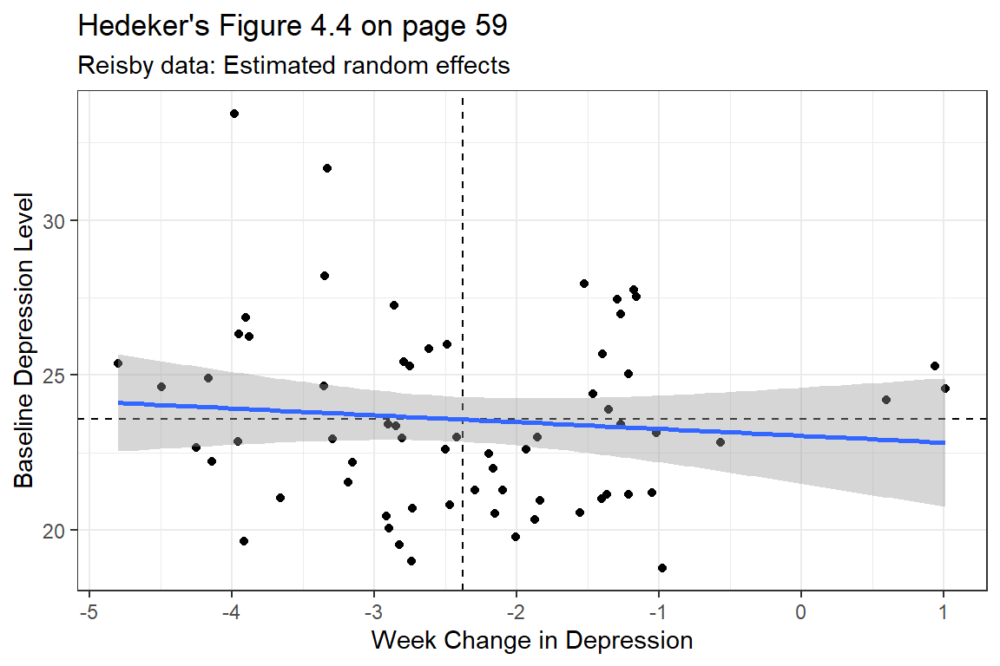
11.6 MLM: Coding of Time
So far we have used the variable week to denote time as weeks since baseline = week \(\in 0, 1, 2, 3, 4, 5\).
But We could CENTER week at the middle of the study (week = 2.5).
11.6.2 Table of Parameter Estimates
apaSupp::tab_lmers(list("Random Intercepts" = fit_lmer_week_RIAS_reml,
" And Random Slopes" = fit_lmer_week_RIAS_reml_wc),
caption = "MLM: Null models fit w/REML",
general_note = "Hedeker table table 4.5 on page 58 and table 4.6 on page 61, except using REML here instead of ML")
| Random Intercepts | And Random Slopes | ||||
|---|---|---|---|---|---|---|
Variable | b | (SE) | p | b | (SE) | p |
(Intercept) | 23.58 | (0.55) | < .001*** | 17.63 | (0.56) | < .001*** |
week | -2.38 | (0.21) | < .001*** | |||
I(week - 2.5) | -2.38 | (0.21) | < .001*** | |||
id.var__(Intercept) | 12.94 | 18.85 | ||||
id.var__week | 2.13 | |||||
id.cov__(Intercept).week | -1.48 | |||||
Residual.var__Observation | 12.21 | 12.21 | ||||
id.var__I(week - 2.5) | 2.13 | |||||
id.cov__(Intercept).I(week - 2.5) | 3.84 | |||||
AIC | 2,232 | 2,232 | ||||
BIC | 2,255 | 2,255 | ||||
Log-likelihood | -1,110 | -1,110 | ||||
Note. Hedeker table table 4.5 on page 58 and table 4.6 on page 61, except using REML here instead of ML | ||||||
* p < .05. ** p < .01. *** p < .001. | ||||||
Unchanged
model fit: AIC, BIC, -2LL, residual variance
fixed effect of week
variance for random intercepts
Changed
fixed intercept
variance for random slopes
covariance between random intercepts and random slopes
model fit: AIC, BIC, -2LL, residual variance
fixed effect of week
variance for random intercepts
Changed
fixed intercept
variance for random slopes
covariance between random intercepts and random slopes
11.6.3 Estimated Marginal Means and Emperical Bayes Plots
data_long %>%
dplyr::mutate(pred_fixed = predict(fit_lmer_week_RIAS_reml_wc,
re.form = NA,
newdata = .)) %>% # fixed effects only
dplyr::mutate(pred_wrand = predict(fit_lmer_week_RIAS_reml_wc,
newdata = .)) %>% # fixed and random effects together
ggplot(aes(x = week,
y = hamd,
group = id)) +
geom_line(aes(y = pred_wrand,
color = "BLUP",
size = "BLUP",
linetype = "BLUP")) +
geom_line(aes(y = pred_fixed,
color = "Marginal",
size = "Marginal",
linetype = "Marginal")) +
theme_bw() +
scale_color_manual(name = "Type of Prediction",
values = c("BLUP" = "gray50",
"Marginal" = "blue")) +
scale_size_manual(name = "Type of Prediction",
values = c("BLUP" = .5,
"Marginal" = 1.25)) +
scale_linetype_manual(name = "Type of Prediction",
values = c("BLUP" = "longdash",
"Marginal" = "solid")) +
theme(legend.position = c(0, 0),
legend.justification = c(-0.1, -0.1),
legend.background = element_rect(color = "black"),
legend.key.width = unit(1.5, "cm")) +
labs(x = "Weeks Since Baseline",
y = "Estimated Hamilton Depression Score (HD)")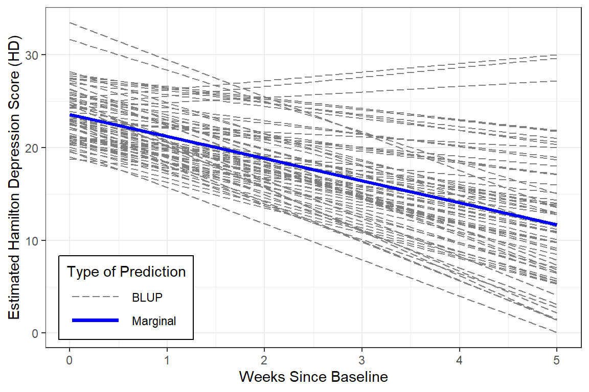
Again, centering time doesn’t change the interpretation at all, since there are no interactions.
11.7 MLM: Effect of DIagnosis on Time Trends (Fixed Interaction)
The researcher specifically wants to know if the trajectory over time differs for the two types of depression. This translates into a fixed effects interaction between time and group.
Start by comapring random intercepts only (RI) to a random intercetps and slopes (RIAS) model.
11.7.2 Estimated Marginal Meanse Plot
interactions::interact_plot(fit_lmer_wkdx_RIAS_ml,
pred = week,
modx = endog,
legend.main = "Type of Depression",
interval = TRUE,
main.title = "Hedeker's Table 4.7 on page 64") +
theme_bw() +
labs(x = "Weeks Since Baseline",
y = "Estimated Marginal Mean\nHamilton Depression Scores (HD)") +
theme(legend.background = element_rect(color = "black"),
legend.position = c(0, 0),
legend.justification = c(-0.1, -0.1),
legend.key.width = unit(1.75, "cm"))
11.7.3 Likelihood Ratio Test
Data: data_long
Models:
Just Time: hamd ~ week + (week | id)
Time X Dx: hamd ~ week * endog + (week | id)
npar AIC BIC logLik -2*log(L) Chisq Df Pr(>Chisq)
Just Time 6 2231.0 2254.6 -1109.5 2219.0
Time X Dx 8 2230.9 2262.3 -1107.5 2214.9 4.1083 2 0.1282apaSupp::tab_lmer_fits(list("Just Time" = fit_lmer_week_RIAS_ml,
"Time X Dx" = fit_lmer_wkdx_RIAS_ml))Model | AIC | BIC | RMSE |
| |
|---|---|---|---|---|---|
Conditional | Marginal | ||||
Just Time | 2231.04 | 2254.60 | 3.00 | .767 | .305 |
Time X Dx | 2230.93 | 2262.34 | 3.00 | .768 | .324 |
Note. Larger values indicated better performance. Smaller values indicated better performance for Akaike's Information Criteria (AIC), Bayesian information criteria (BIC), and Root Mean Squared Error (RMSE). | |||||
The more complicated model (including the moderating effect of diagnosis) is NOT supported.
The more complicated model (including the moderating effect of diagnosis) is NOT supported.
11.8 MLM: Quadratic Trend
11.8.2 Table of Parameter Estimates
apaSupp::tab_lmers(list("Linear Trend" = fit_lmer_week_RIAS_ml,
"Quadratic Trend" = fit_lmer_quad_RIAS_ml),
caption = "MLM: RIAS models fit w/ML",
general_note = "Hedeker table 4.5 on page 58 and table 5.1 on page 84")
| Linear Trend | Quadratic Trend | ||||
|---|---|---|---|---|---|---|
Variable | b | (SE) | p | b | (SE) | p |
(Intercept) | 23.58 | (0.55) | < .001*** | 23.76 | (0.55) | < .001*** |
week | -2.38 | (0.21) | < .001*** | -2.63 | (0.48) | < .001*** |
I(week^2) | 0.05 | (0.09) | .562 | |||
id.var__(Intercept) | 12.63 | 10.44 | ||||
id.var__week | 2.08 | 6.64 | ||||
id.cov__(Intercept).week | -1.42 | -0.92 | ||||
Residual.var__Observation | 12.22 | 10.52 | ||||
id.var__I(week^2) | 0.19 | |||||
id.cov__(Intercept).I(week^2) | -0.11 | |||||
id.cov__week.I(week^2) | -0.94 | |||||
AIC | 2,231 | 2,228 | ||||
BIC | 2,255 | 2,267 | ||||
Log-likelihood | -1,110 | -1,104 | ||||
Note. Hedeker table 4.5 on page 58 and table 5.1 on page 84 | ||||||
* p < .05. ** p < .01. *** p < .001. | ||||||
11.8.3 Likelihood Ratio Test
Data: data_long
Models:
fit_lmer_week_RIAS_ml: hamd ~ week + (week | id)
fit_lmer_quad_RIAS_ml: hamd ~ week + I(week^2) + (week + I(week^2) | id)
npar AIC BIC logLik -2*log(L) Chisq Df Pr(>Chisq)
fit_lmer_week_RIAS_ml 6 2231.0 2254.6 -1109.5 2219.0
fit_lmer_quad_RIAS_ml 10 2227.7 2266.9 -1103.8 2207.7 11.39 4 0.02252
fit_lmer_week_RIAS_ml
fit_lmer_quad_RIAS_ml *
---
Signif. codes: 0 '***' 0.001 '**' 0.01 '*' 0.05 '.' 0.1 ' ' 1apaSupp::tab_lmer_fits(list("Linear Trend" = fit_lmer_week_RIAS_ml,
"Quadratic Trend" = fit_lmer_quad_RIAS_ml))Model | AIC | BIC | RMSE |
| |
|---|---|---|---|---|---|
Conditional | Marginal | ||||
Linear Trend | 2231.04 | 2254.60 | 3.00 | .767 | .305 |
Quadratic Trend | 2227.65 | 2266.92 | 2.66 | .799 | .306 |
Note. Larger values indicated better performance. Smaller values indicated better performance for Akaike's Information Criteria (AIC), Bayesian information criteria (BIC), and Root Mean Squared Error (RMSE). | |||||
Even though the Wald test did not find the quadratic fixed time trend to be significant at the population level (marginal), the LRT and Bayes Factor both find that including the quadratic terms improves the model’s fit.
11.8.4 Estimated Marginal Means Plot
(Intercept) week I(week^2)
23.76024931 -2.63257550 0.05148118 
At the population level, the curviture is very slight.
11.8.5 BLUPs or Emperical Bayes Estimates
(Intercept) week I(week^2)
101 25.16568 -5.28320574 0.150797898
103 27.50745 -3.43491942 0.119893070
104 25.99802 -3.09402774 -0.176874809
105 21.01143 -2.95260695 0.164661310
106 23.64346 -0.74434288 -0.141869439
107 22.70272 -1.98456635 -0.179102723
108 22.40954 -4.72427333 0.316018273
113 22.70934 -0.40481066 -0.023811547
114 21.71498 -4.51594039 0.305503426
115 21.54597 -2.55735173 0.139468215
117 20.68538 -3.87700598 0.196726431
118 25.37072 -2.57668561 -0.047612788
120 21.54365 -2.02855857 0.175311125
121 22.58018 -1.75376620 -0.038803501
123 19.25422 -2.87313328 0.017544440
302 21.58631 -3.89089208 0.294415462
303 22.46073 -3.40753346 0.044347424
304 24.67540 -0.37917905 -0.166163234
305 21.27401 -3.68029891 -0.010284082
308 23.09149 -2.47011784 0.005957118
309 22.90665 -1.55838475 -0.062497756
310 23.05813 -5.82989110 0.392498095
311 21.32624 -1.62725872 0.056409374
312 20.97726 -0.80436962 -0.285840159
313 21.61301 -4.45108736 0.355814846
315 25.23222 -4.58343575 0.080215319
316 27.75570 -1.45599106 0.069628465
318 20.56471 -0.29407613 -0.235305940
319 22.38191 -4.51711680 0.466348104
322 24.93396 1.26790220 -0.042514973
327 19.82906 -3.17596440 0.466785078
328 23.74557 1.29271519 -0.129016269
331 21.92610 -1.83150085 -0.074414325
333 23.11845 -0.64673576 -0.127985644
334 27.19413 -6.33064836 0.497609399
335 22.72436 -2.57422920 0.010288104
337 25.62004 -2.06605757 -0.118351519
338 22.89846 -0.54280685 -0.095535665
339 24.27805 -4.99289355 0.444970899
344 22.43029 -4.34889767 0.557803881
345 27.22530 -1.03850791 -0.044993297
346 24.66105 -2.09385824 0.138720526
347 20.11424 -3.85554369 0.239872680
348 23.42448 -4.05934237 0.152401519
349 20.49507 -3.30476908 0.269603183
350 23.29831 -3.86555309 0.351771472
351 27.85601 -2.54762022 -0.174399140
352 21.86126 -2.47215900 0.305550241
353 25.44900 -1.25790274 -0.261971309
354 26.94737 0.07804051 -0.289825508
355 24.47061 -2.72957880 -0.141018009
357 25.37351 -0.82942992 -0.114172123
360 24.04648 1.73526367 -0.131110574
361 25.48488 -7.37196846 0.953493451
501 27.83193 -1.46847456 -0.003542252
502 22.99362 -4.51402369 0.038610170
504 20.80203 -2.67923854 0.167676919
505 20.96545 -6.31342799 0.490342679
507 26.25982 0.08284338 -0.277546394
603 25.55711 -3.23920867 0.099754365
604 26.04324 -6.06910895 0.284967399
606 24.47425 -3.73161413 -0.178377690
607 31.08954 1.15555205 -1.091096102
608 23.46557 -4.87963004 0.180135655
609 25.91657 -2.23143282 -0.347100805
610 30.62473 -0.54534562 -0.593020846For Illustration, two cases have been hand selected: id = 115 and 610.
fun_115 <- function(week){
coef(fit_lmer_quad_RIAS_ml)$id["115", "(Intercept)"] +
coef(fit_lmer_quad_RIAS_ml)$id["115", "week"] * week +
coef(fit_lmer_quad_RIAS_ml)$id["115", "I(week^2)"] * week^2
}
fun_610 <- function(week){
coef(fit_lmer_quad_RIAS_ml)$id["610", "(Intercept)"] +
coef(fit_lmer_quad_RIAS_ml)$id["610", "week"] * week +
coef(fit_lmer_quad_RIAS_ml)$id["610", "I(week^2)"] * week^2
}data_long %>%
dplyr::mutate(pred_fixed = predict(fit_lmer_quad_RIAS_ml,
re.form = NA,
newdata = .)) %>% # fixed effects only
dplyr::mutate(pred_wrand = predict(fit_lmer_quad_RIAS_ml,
newdata = .)) %>% # fixed and random effects together
ggplot(aes(x = week,
y = hamd,
group = id)) +
stat_function(fun = fun_115) + # add cure for ID = 115
stat_function(fun = fun_610) + # add cure for ID = 610
geom_line(aes(y = pred_fixed),
color = "blue",
size = 1.25) +
theme_bw() +
theme(legend.position = c(0, 0),
legend.justification = c(-0.1, -0.1),
legend.background = element_rect(color = "black"),
legend.key.width = unit(1.5, "cm")) +
labs(x = "Weeks Since Baseline",
y = "Estimated Hamilton Depression Scores (HD)",
title = "Similar to Hedeker's Figure 5.3 on page 84",
subtitle = "Marginal Mean show in thicker blue\nBLUPs for two of the participant in thinner black")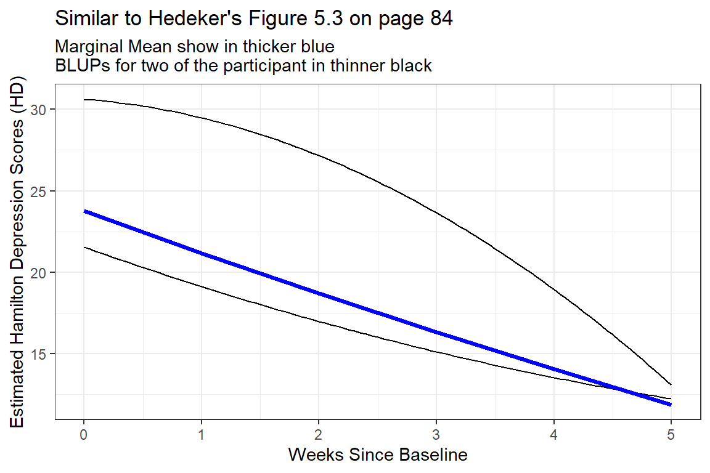
Figure 11.1
Two Example BLUPS for two different participants
These two individuals have quite different curvatures and illustrated how this type of curvatures in person-specific trajectories may end up cancelling each other out to arrive at a fairly linear marginal model.
11.8.6 Estimated Marginal Means and Emperical Bayes Plots
Note: although the BLUPs are shown for all participants, the predictions are just connects and are therefore slightly jagged and now smoother like the lines on the plot above.
data_long %>%
dplyr::mutate(pred_fixed = predict(fit_lmer_quad_RIAS_ml,
re.form = NA,
newdata = .)) %>% # fixed effects only
dplyr::mutate(pred_wrand = predict(fit_lmer_quad_RIAS_ml,
newdata = .)) %>% # fixed and random effects together
ggplot(aes(x = week,
y = hamd,
group = id)) +
geom_line(aes(y = pred_wrand,
color = "BLUP",
size = "BLUP",
linetype = "BLUP")) +
geom_line(aes(y = pred_fixed,
color = "Marginal",
size = "Marginal",
linetype = "Marginal")) +
theme_bw() +
scale_color_manual(name = "Type of Prediction",
values = c("BLUP" = "gray50",
"Marginal" = "blue")) +
scale_size_manual(name = "Type of Prediction",
values = c("BLUP" = .5,
"Marginal" = 1.25)) +
scale_linetype_manual(name = "Type of Prediction",
values = c("BLUP" = "longdash",
"Marginal" = "solid")) +
theme(legend.position = c(0, 0),
legend.justification = c(-0.1, -0.1),
legend.background = element_rect(color = "black"),
legend.key.width = unit(1.5, "cm")) +
labs(x = "Weeks Since Baseline",
y = "Estimated Hamilton Depression Scores",
title = "Hedeker's Figure 5.4 on page 85")
Figure 11.2
EStimated curvilinear trends
At the person-level, the curvature is very diverse (heterogeneous). Some individuals have accelerating downward tend while other have accelerating upward trends.
The improvement that the curvi-linear model provides in describing change across time is perhaps modest.